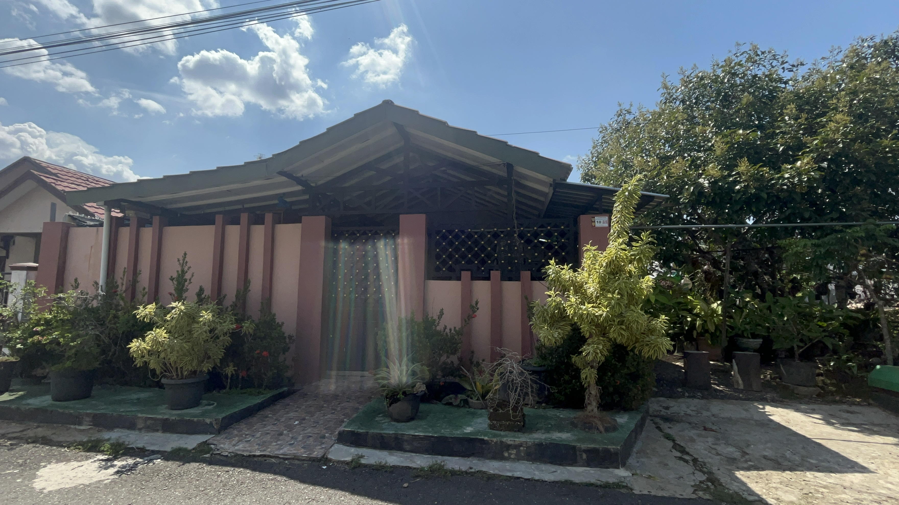
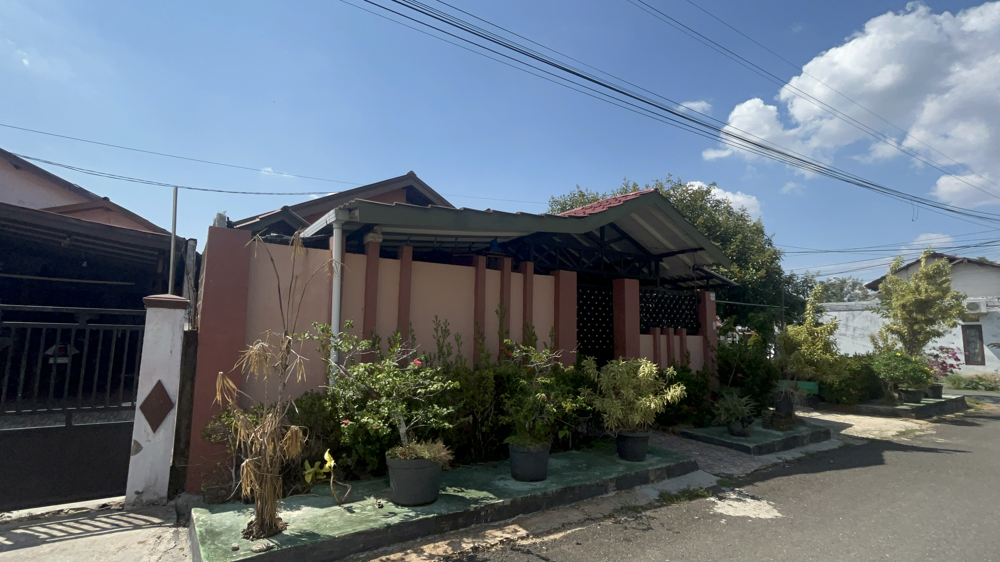
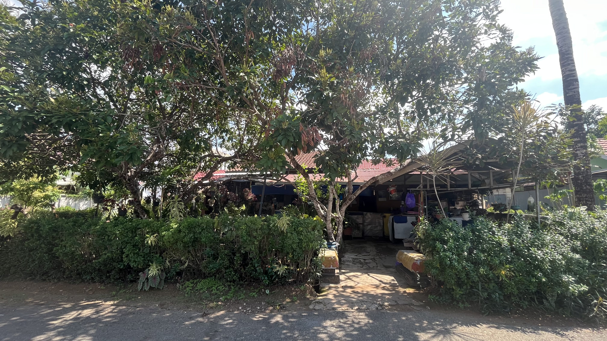
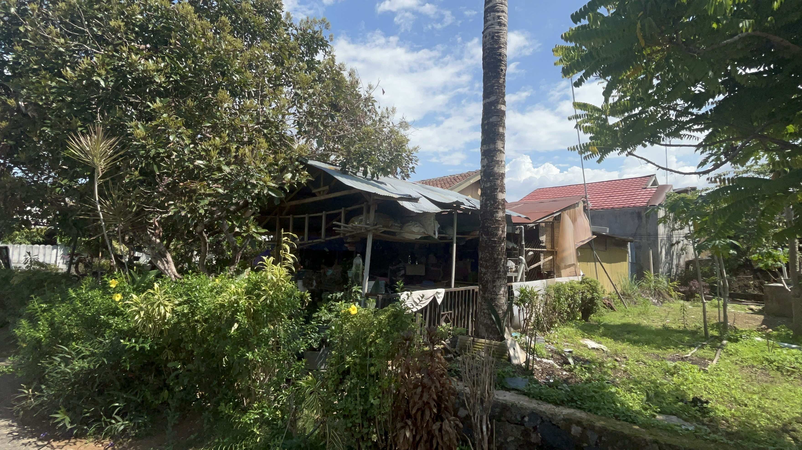
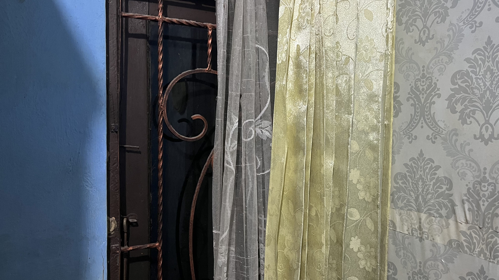
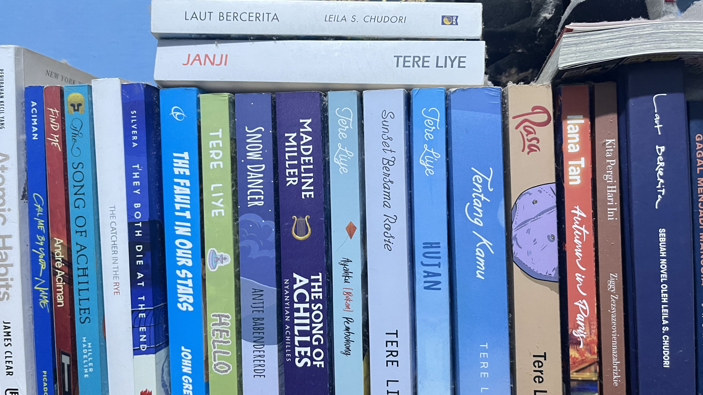
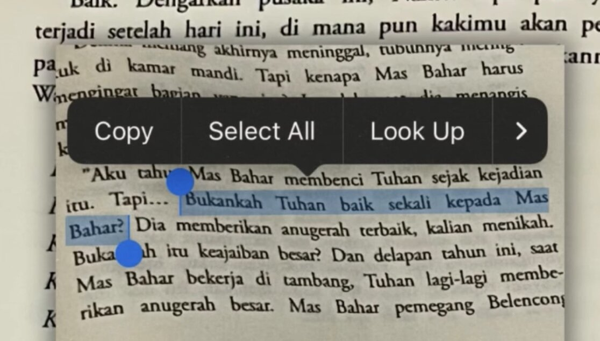

Biodata
- Place and date of birth
- Banjarbaru, 14 Februari 2006
- Address
- Jln. Hamransani No 10. Komplek Lambung Mangkurat Persada
Hello!





Membaca adalah salah satu hobi saya. Saya suka menikmati cerita dan mendapatkan wawasan baru dari berbagai buku.

